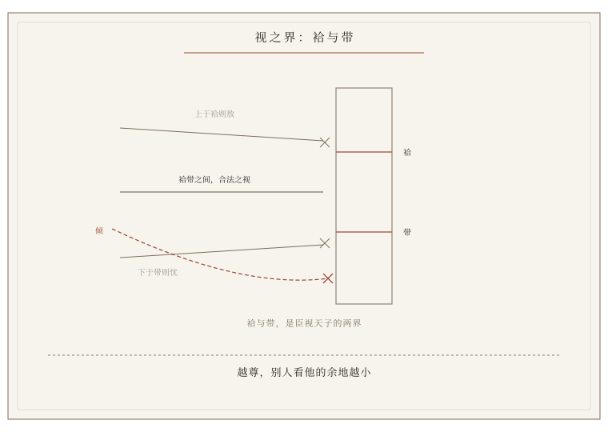

曲礼下 · 二·七十六 · 第 199 课
天子视不上于袷，不下于带；国君绥视；大夫衡视；士视五步。凡视，上于面则敖，下于带则忧，倾则奸。注「袷，交领也。天子至尊，臣视之，目不过此」。
说什么事：眼睛放在哪里，也有尺寸。
落在哪一层：礼，兼及礼意。论视之界。
为何编在此位：上节论死之名，此节转生之视。名与目，都是分寸。
【经】天子視不上於袷，不下於帶。國君綏視。大夫衡視。士視五步。凡視，上於面則敖，下於帶則憂，傾則姦。
【注】袷，交領也。天子至尊，臣視之，目不過此。視國君彌高，綏讀為妥，妥視，謂視上於袷。視大夫又彌高也。衡，平也，平視，謂視面也。士視得旁遊目五步之中也，視大夫以上，上下游目不得旁。敖則仰。憂則低。辟頭旁視，心不正也。
【疏】「天子视不上于袷」者，袷谓朝祭服之曲领也。天子至尊，臣之所视，不得上过于袷，过袷则慢；供奉至尊，须承候颜色，又不得下过于带，若下过于带，则似有忧戚，不供其事。「国君绥视」者，妥，下也；若臣视君，目不得取看于面，当视面下袷上，既卑，稍得上视也。庾氏云「妥，颓下之貌；前执器以心为平，故以下为妥；此视以面为平，故妥下于面，则上于袷也」。「大夫衡视」者，衡，平也，人相看以面为平；若大夫之臣视大夫，平看其面也。「士视五步」者，若视大夫以上，唯直瞻上下，并不得旁视；若士之属吏视士，亦不得高面下带，而得旁视左右五步也。「凡视上于面则敖」者，视人过高则是敖慢，定十五年「邾子执玉高，其容仰」，高仰，骄也。「下于带则忧」者，若视过下则似有忧，有忧头低垂，定十五年「鲁公受玉卑，其容俯」，卑俯，替也；又昭十一年会于厥憖，单子视不登带是也。「倾则奸」者，倾，欹侧也，若视尊者而欹侧旁视，流目东西，则似有奸恶之意也。
袷 朝祭服的交领。
带 腰带。袷与带之间，是视的合法区间。
绥视 绥读为妥，妥视，视面下袷上。
衡视 衡，平。平视其面。
五步 旁游目五步之内。
敖、忧、奸 仰则骄，低则忧，侧则心不正。
臣视天子，目光不低于交领、不高于腰带。视国君用妥视，稍高于袷。视大夫平视其面。视士可旁视左右五步。凡视：高于面则骄，低于带则忧，歪头侧视则奸。
一节把目光画进几何：上界是袷，下界是带，中间是合法；再往上，仰而骄；再往下，低而忧；偏一侧，侧而奸。礼管的不是看不看，是看哪里。
第一层 两界之间 袷与带，一上一下，把人的视域压成一条窄带。疏说得很实：「过袷则慢」「过带则似有忧戚，不供其事」。两界都有理由，不是虚设。
第二层 尊则窄，卑则宽 天子只容袷带之间；国君可稍上；大夫可平视其面；士则得旁游五步。越尊，视域越窄。这是一条极精确的等级法则：地位越高，别人看他的余地越小。
第三层 倾则奸 前两界管上下，第三句管左右。「辟头旁视」是心不正的外形。礼由目见心。
第四层 经传互证 疏引定十五年邾子执玉高、鲁公受玉卑，一骄一替；又引昭十一年单子视不登带。三个实例，皆为「视」作注脚。礼书记分寸，史书记失分寸。
与今日何干 听人说话时目光落在哪里，仍在无声地定上下。礼的老规矩，今天还管用，只是没人明说。
| 左 | 右 |
|---|---|
| 天子视不上于袷 | 过袷则慢 |
| 不下于带 | 过带则似忧戚 |
| 国君绥视 | 妥视，面下袷上 |
| 大夫衡视 | 平视其面 |
| 士视五步 | 得旁游目 |
| 上于面则敖，下于带则忧 | 倾则奸 |
画一枚竖立的方牌（示尊者之身），牌面上方画一道横线（示交领）、下方画一道横线（示腰带），两线之间留白为「可看之区」。牌之左侧引出四道短线各指向不同处：最上者斜指牌顶之上、线端被打叉；次上者平指两横线之间；再次者斜向下指两线之间偏下；最下者横指牌外远处。不写文字、不画人。赭色只用在被划去的最上一道线。
